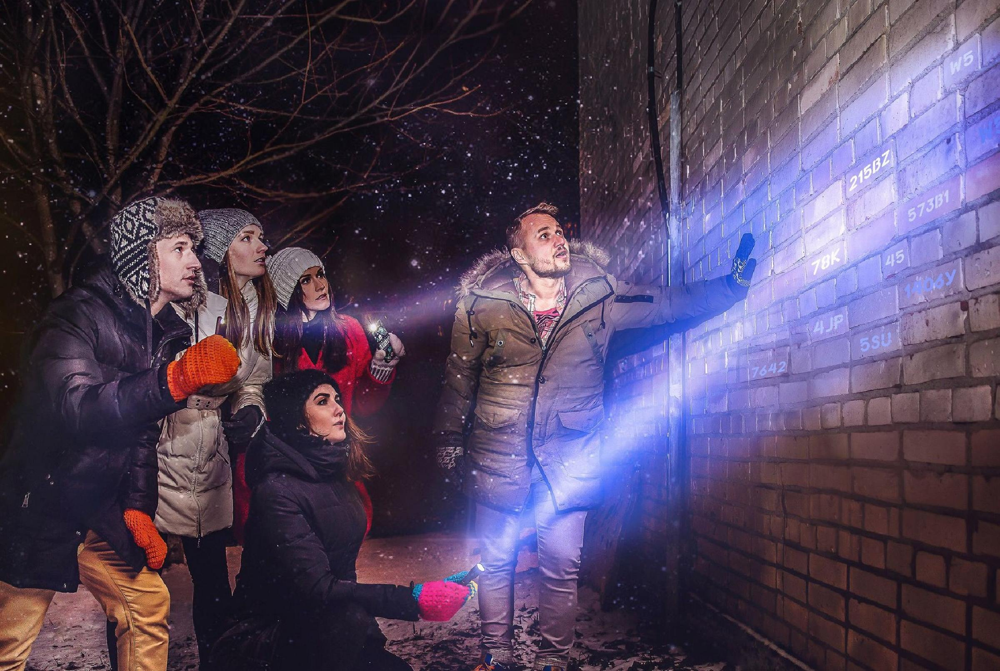

Лучшие экскурсии по Санкт-Петербургу!
Санкт-Петербург пропускает через себя больше 10 млн туристов в год.
Кто-то ездит на обзорные экскурсии, кого-то на прогулках по городу сопровождают друзья. Если ты - отчаянный путешественник, который хочет посмотреть на город изнутри, мы погрузим тебя в атмосферу Петербурга в познавательной обстановке. А коренным петербуржцам мы покажем такие закоулки, о которых вы даже не подозревали. Звони, приходи, играй!
- Более 300 красивейших достопримечательностей
- 5 интереснейших маршрутов в разных частях города
- Одни из лучших экскурсоводов города

ЧТО МЫ ПРЕДОСТАВЛЯЕМ
У нас целый ассортимент разнообразных экскурсий и квестов по городу. Самые популярные представлены ниже
Квесты "от метро до метро"
Формат квестов в разных районах города, старт и финиш которых находится вблизи разных станций метро. Маршрут проложен как по известным достопримечательностям, так и по интересным арт-объектам в закоулках дворов.
Наперегонки по Питеру
По мотивам игрового телешоу. Две команды соревнуются в скорости выполнения заданий на точках. Маршрут составляется участниками команды, потому что подсказку к следующей точке можно узнать только после выполнения на предыдущей.
Автомобильные прогулки по ночному городу
Перемещения по городу ночью намного продуктивнее, чем днем в огромном потоке машин. Поэтому за то же время вы успеете увидеть в несколько раз больше достопримечательностей, даже если они довольно далеко.